← Gate B scripts · Gate A bible
Loon Point, season 1 · Gate C: storyboards
All 32 shots for episodes 1–5, in order, with the narration each one carries. Stills by Grok; each checked against its shot description (people, props, cane, loon, no stray text). Lettering (calendar, door-frame names, years) is added during the edit.
Spend: > C_stills cap $ 10.00 spent $ 4.90 providers xai-image [in progress]
Gate C question
Do you approve these storyboards? Approval opens Stage D: the episode 1 pilot (cap $6). Under the approved plan, that's an all-still cut plus narration, with no Grok video.
Decisions and proposed changes
- E2-2 line change (proposed): Grok couldn't stack the dock chairs in 3 tries, so I stopped spending on it. Proposed narration: "October closing. Frost on the dock. The loon has open water." instead of "Chairs stacked."
- E4-7 was made from E2-1 with one new pencil line drawn in, at no cost, after both generated takes put a person in the shot.
- E3-2 reuses the existing cabin still from the Episode 1 preview.
- The 1978 photo (below) reads a little older than the canon ages (Walt 42, June 40, Dave 18, Ruth 9). It's small on screen inside June's frame.
- Wardrobe follows the scripts (checked shirts, coats for autumn and winter). Faces follow the original character sheets.
Episode 1: Who Gets the Fourth?
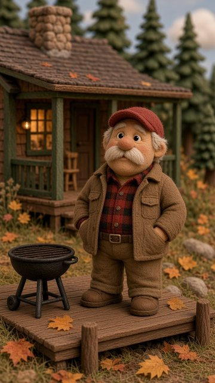
E1-1 00:00–00:06
“Dave gets the Fourth. Again. He's had it since nineteen ninety-four.”
Camera: Slow push
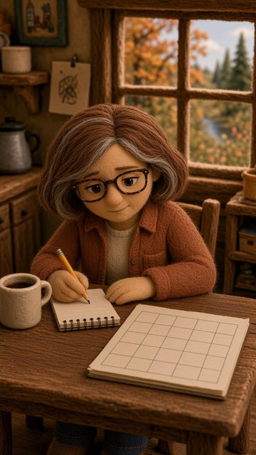
E1-2 00:06–00:12.5
“It's October. Ruth pencils in next July. Her brother Dave considers it settled.”
Camera: Pan toward the holiday entry
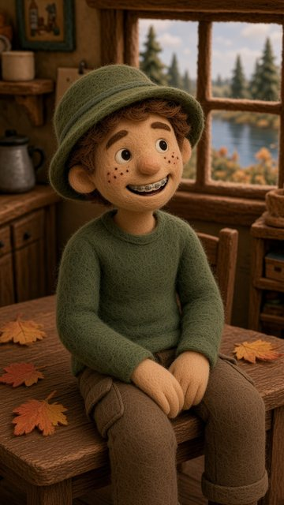
E1-3 00:12.5–00:17
“Ruth's son Sam asked, 'When is our turn?'”
Camera: Short push and hold
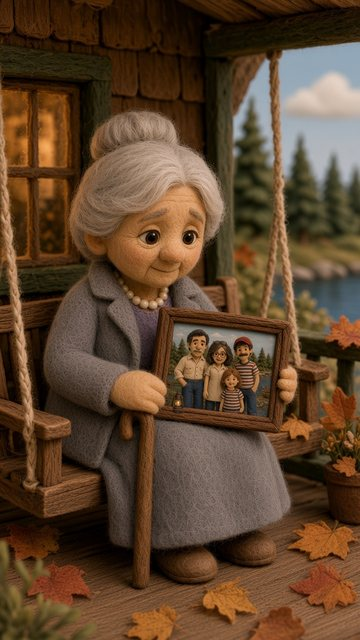
E1-4 00:17–00:24
“June built me. She showed the photograph. 'All of us together. Like that.'”
Camera: Gentle push retaining cane and entire frame
The framed photo is the 1978 photo master (shown below).
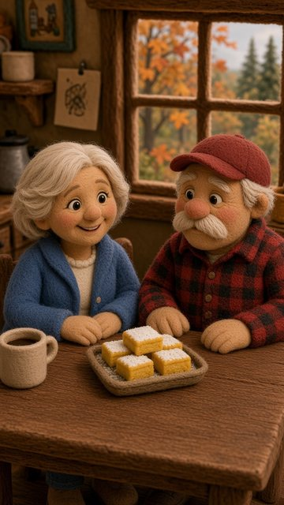
E1-5 00:24–00:32
“Linda brought refreshments for the negotiations.”
Camera: Pan from lemon bars to Dave's reaction; settle for the identifier
Episode 2: Closing Day
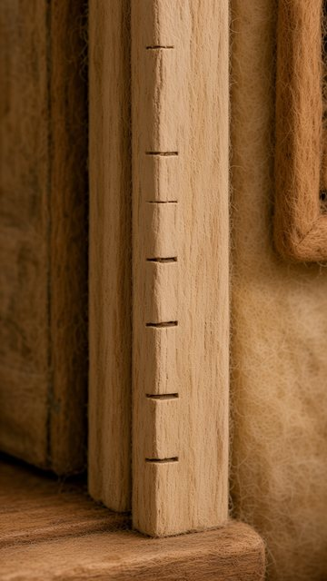
E2-1 00:00–00:04
“His dad wrote that. Dave was six.”
Camera: Readable hold
Close-up of the door frame; 'Dave, 1966' is lettered in during the edit. Check it reads as a door frame to you.
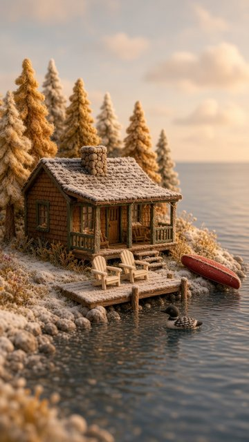
E2-2 00:04–00:09 animated
“October closing. Chairs stacked. The loon has open water.”
Camera: Locked camera
Grok video source (animated later). Couldn't get the chairs stacked in 3 tries; see proposed line change.
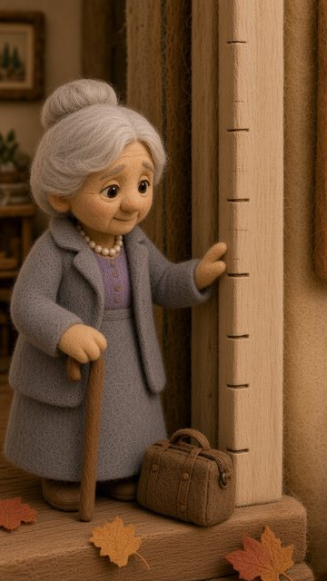
E2-3 00:09–00:14
“June stopped beside the frame. Her bag waited nearby.”
Camera: Gentle push retaining cane
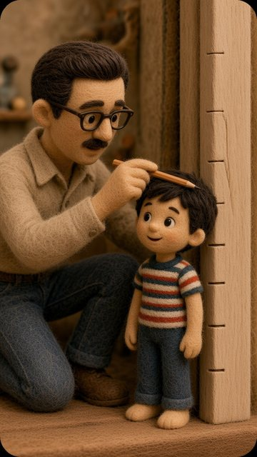
E2-4 00:14–00:19.5
“Nineteen sixty-six. Walt measured his son. Dave stood very straight.”
Camera: Restrained push; hands remain static
1966 memory. Gets a stronger faded-film color grade in the edit.
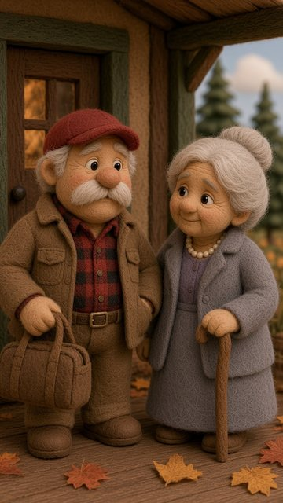
E2-5 00:19.5–00:24
“Dave carried her bag. For once, without instructions.”
Camera: Pan from bag to Dave's face
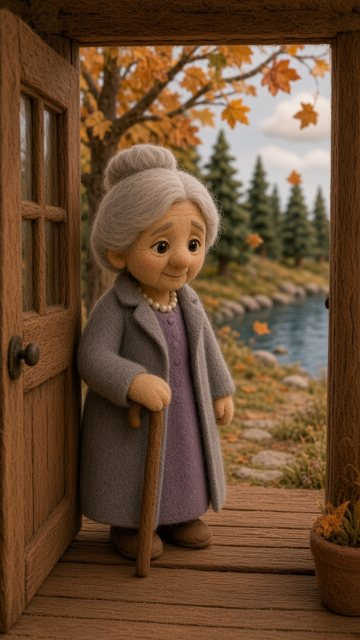
E2-6 00:24–00:32
“She says, 'See you in May.' She always does.”
Camera: Slow pullback, then hold
Episode 3: The Hot Dog Flag
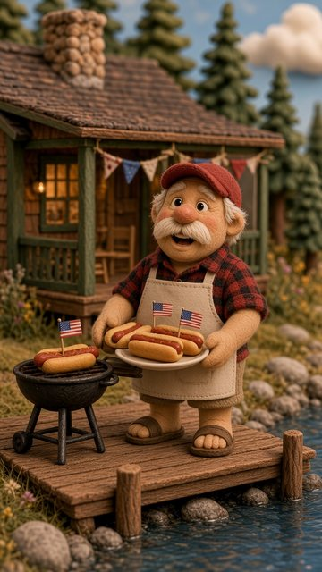
E3-1 00:00–00:05.5
“A flag. In every hot dog. 'No exceptions,' said Dave.”
Camera: Small push retaining flags
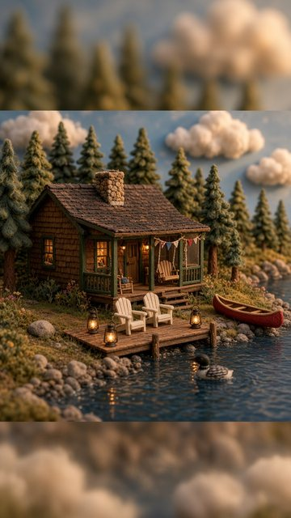
E3-2 00:05.5–00:10 animated
“I remember the sandwich. Dave remembers a tradition.”
Camera: Locked geometry
Grok video source. Reused the existing Episode 1 cabin still (no new cost).
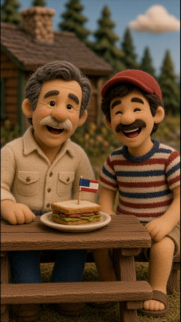
E3-3 00:10–00:15
“Nineteen ninety-four. Walt's sandwich had a toothpick flag.”
Camera: Pan toward sandwich flag
1994 memory, camcorder look.
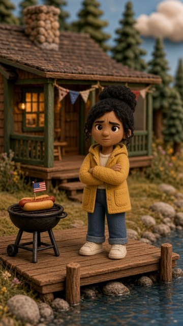
E3-4 00:15–00:19
“Maya said, 'So it started with lunch.'”
Camera: Small push
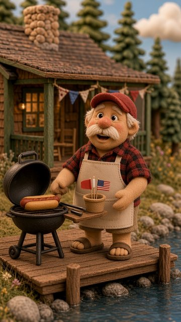
E3-5 00:19–00:24.5
“That was Walt's last Fourth here. Dave brings fresh flags.”
Camera: Near-static hold
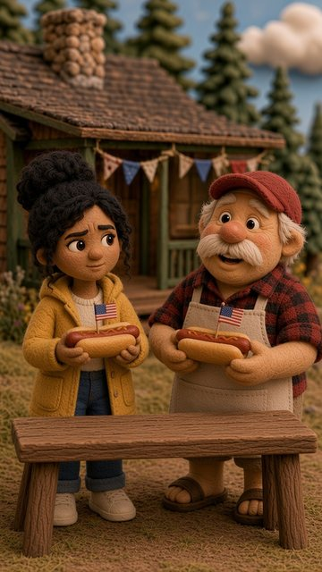
E3-6 00:24.5–00:32
“Maya kept the flag. And her opinion.”
Camera: Pan between them, then hold
Episode 4: Meet Marcus
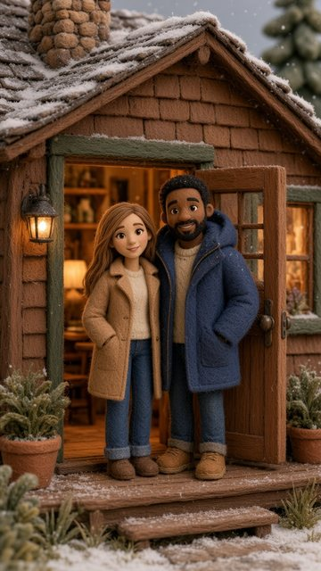
E4-1 00:00–00:05.5
“The coat arrived before Marcus. Kayla's fiancé. His first visit.”
Camera: Tilt from oversized sleeves to faces
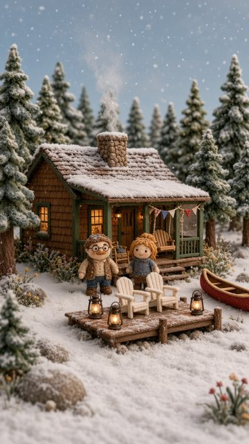
E4-2 00:05.5–00:08.5 animated
“Thanksgiving. Borrowed coat.”
Camera: Locked camera
Grok video source.
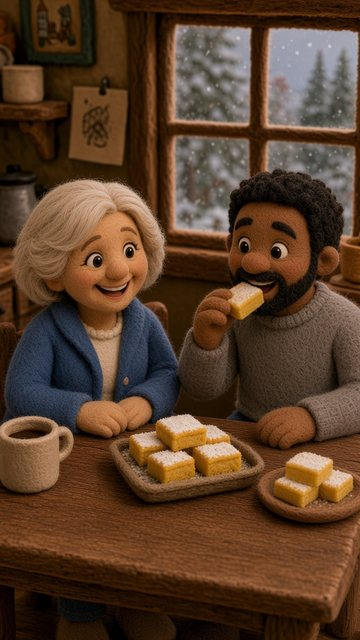
E4-3 00:08.5–00:13
“Linda offered lemon bars. Marcus already had two.”
Camera: Pan toward tray and plate
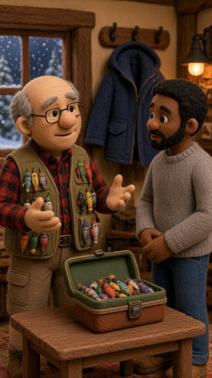
E4-4 00:13–00:17.5
“Ken explained fishing tackle. Indoors. Marcus kept listening.”
Camera: Short lateral move
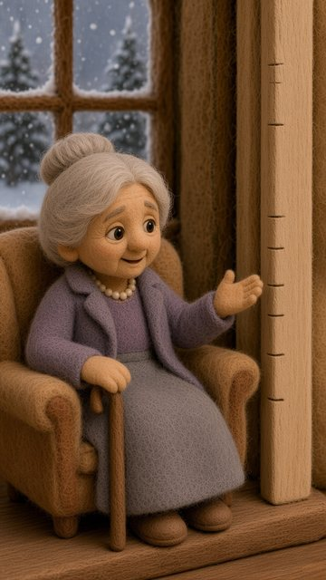
E4-5 00:17.5–00:22
“June pointed toward my frame. 'Come over here.'”
Camera: Restrained push
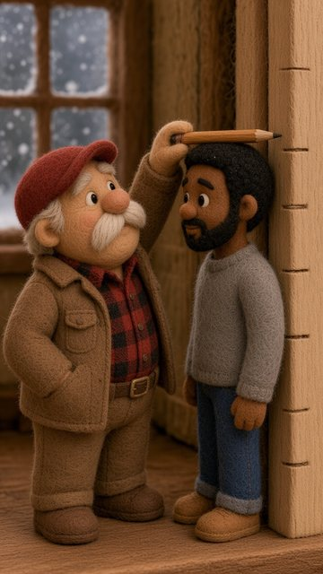
E4-6 00:22–00:26.5
“Dave held the pencil. Marcus stood very straight.”
Camera: Gentle push retaining pencil position
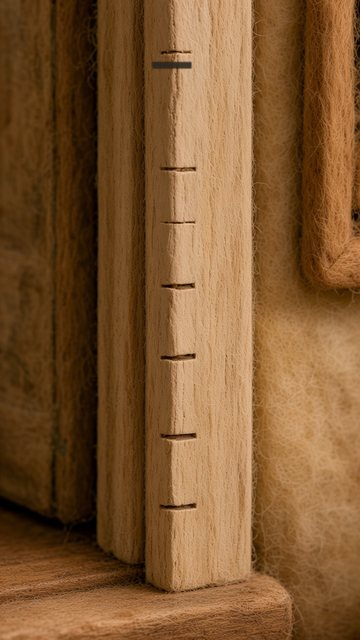
E4-7 00:26.5–00:35
“You're on the wall now. That's how it works here.”
Camera: Readable hold
Made from E2-1 plus one new, darker pencil line (no generation cost); 'Marcus, 2026' is lettered in during the edit.
Episode 5: The Calendar
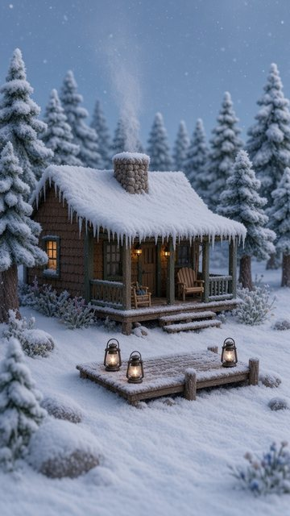
E5-1 00:00–00:04 animated
“In January, I dream about the calendar.”
Camera: Locked camera
Grok video source.
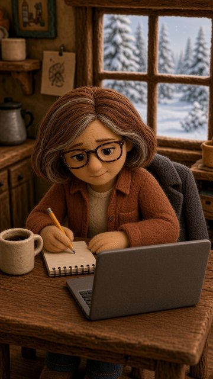
E5-2 00:04–00:08
“Ruth put the summer calendar in SplitHaus.”
Camera: Static hold
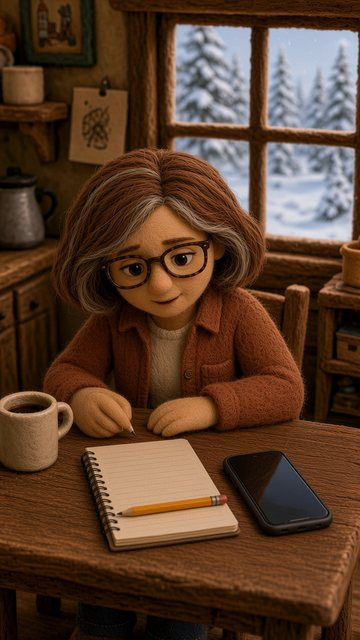
E5-3 00:08–00:13
“On speakerphone, Kayla said, 'Our wedding. The Fourth. The dock.'”
Camera: Slight lateral move toward the ordinary phone
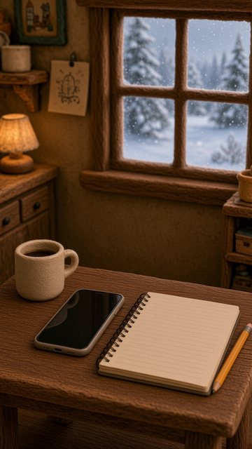
E5-4 00:13–00:17
“Maya said, 'We asked for that week too.'”
Camera: Readable hold
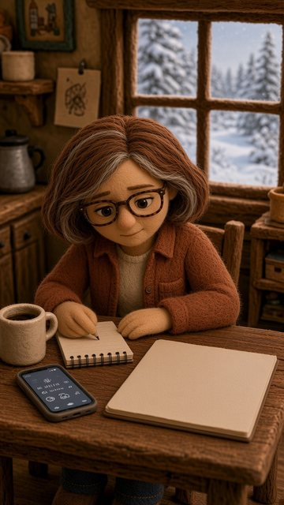
E5-5 00:17–00:20
“June said, 'Walt proposed here.'”
Camera: Slow push
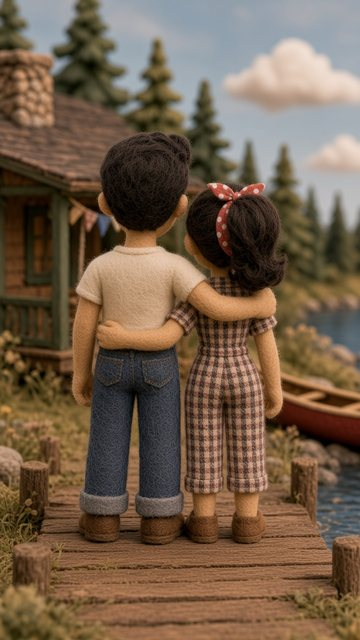
E5-6 00:20–00:23
“'July Fourth, nineteen fifty-six.'”
Camera: Gentle push
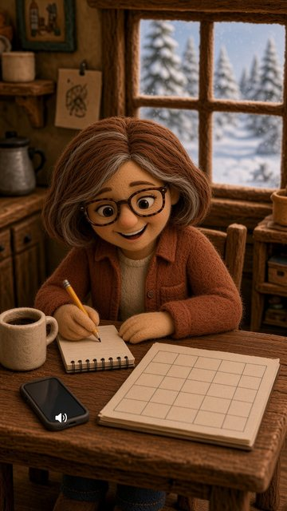
E5-7 00:23–00:28.5
“Maya. 'For the wedding, yes.' Dave. 'I'll do the hot dogs.'”
Camera: Small lateral move
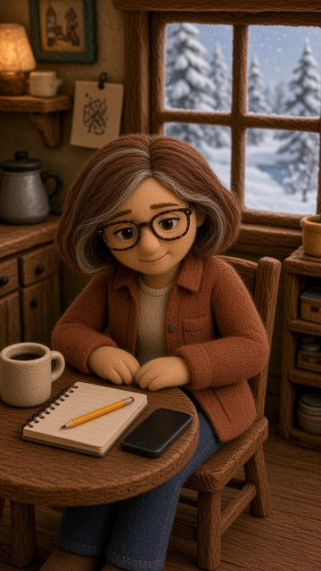
E5-8 00:28.5–00:35
“Ruth closed the notebook. Nobody reopened it.”
Camera: Ending hold
1978 photo master
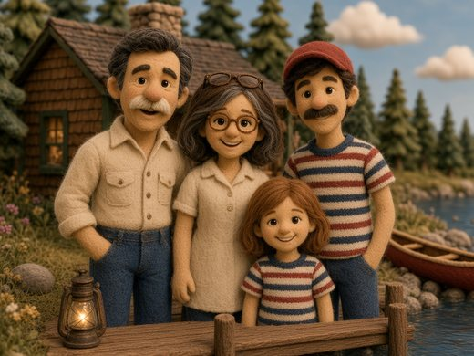